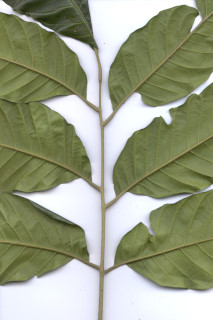
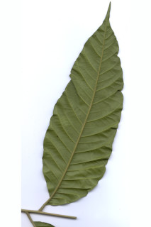
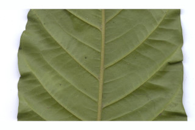
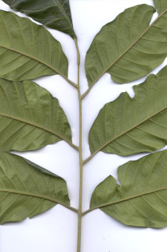
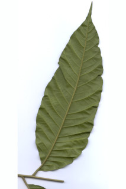
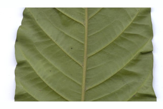

Large trees with clear bole, up to 35 m tall.
30 ಮೀ. ಎತ್ತರದವರೆಗೆ ಬೆಳೆಯುವ ಹಾಗೂ ಸ್ಪಷ್ಟವಾದ ಬುಡವುಳ್ಳ ದೊಡ್ಡ ಗಾತ್ರದ ಮರಗಳು.
Large trees with clear bole, up to 35 m tall.
மிகப்பெரிய நேரான மரம், முதல் 35 மீ. உயரம் வரை வளரக்கூடியது.
Bark grey with dense large corky lenticels, exfoliating with large rectangular scales; blaze yellow and white.
ತೊಗಟೆ ಬೂದು ಬಣ್ಣದಲ್ಲಿದ್ದು ದೊಡ್ಡ ಗಾತ್ರದ ಬೆಂಡು ರೀತಿಯ ವಾಯು ವಿನಿಮಯ ರಂಧ್ರಗಳಿಂದ ದಟ್ಟವಾಗಿ ಆವರಿಸಿರುತ್ತದೆ ಹಾಗೂ;ಕಚ್ಚು ಮಾಡಿದ ಜಾಗ ಹಳದಿ ಮತ್ತು ಬಿಳಿ ಬಣ್ಣದಲ್ಲಿರುತ್ತದೆ.
Bark grey with dense large corky lenticels, exfoliating with large rectangular scales; blaze yellow and white.
மரத்தின் பட்டை சாம்பல் நிறமானது, பெரிய மற்றும் கார்க் போன்ற அடர்த்தியாக லெண்டிசெல் உடையது, பெரிய செதில்களாக உதிருபவை; உள்பட்டை மஞ்சள் நிறமானவை மற்றும் வெள்ளை நிறமானது.
Young branchlets angular, minutely pubescent.
ಕಿರುಕೊಂಬೆಗಳು ಕೋನಯುಕ್ತವಾಗಿರುತ್ತವೆ ಮತ್ತು ಸೂಕ್ಷ್ಮವಾದ ರೋಮಗಳಿಂದ ಕೂಡಿರುತ್ತವೆ.
Young branchlets angular, minutely pubescent.
சிறிய நுனிக்கிளைகள் குறுக்குவெட்டுத் தோற்றத்தில் கோணங்களுடையது, சிறிய உரோமங்களுடையது.
Leaves compound, paripinnate, to 30 (-40) cm long, alternate, spiral, clustered at twig ends, pulvinate; rachis angular, 17-20 cm long; petiolule 0.5-0.9 cm; leaflets 4-6 pairs, alternate or subopposite, 9-22 x 4-7 cm, elliptic-lanceolate; apex acuminate, base asymmetric, margin entire, coriaceous; midrib raised above; secondary neves 12-20 pairs, strong, with hairy domatia in axills; tertiary_nerves obscurely visible, reticulo-percurrent.
ಎಲೆಗಳು ಸಂಯುಕ್ತ, ಸಮಗರಿ ರೂಪಿಗಳಾಗಿದ್ದು 30(- 40 )ಸೆಂ.ಮೀ.ವರೆಗಿನ ಉದ್ದವಿರುತ್ತವೆ, ಜೋಡನೆಯಲ್ಲಿ ಪರ್ಯಾಯ ಮತ್ತು ಸುತ್ತು ವ್ಯವಸ್ಥೆ ಮಾದರಿಯಲ್ಲಿದ್ದು ಕುಡಿಕೊಂಬೆಗಳ ತುದಿಯಲ್ಲಿ ಗುಂಪಾಗಿರುತ್ತವೆ ಮತ್ತು ಉಬ್ಬಿದ ಎಲೆ ಬುಡವನ್ನು ಹೊಂದಿರುತ್ತವೆ; ನಡುಕಾಂಡ 17 ರಿಂದ 20 ಸೆಂ.ಮೀ. ಉದ್ದ ವಿದ್ದು ಕೋನಯುಕ್ತವಾಗಿರುತ್ತದೆ; ಕಿರುತೊಟ್ಟುಗಳು 0.5-0.9 ಸೆಂ.ಮೀ. ಉದ್ದವಿರುತ್ತವೆ;ಕಿರುಪತ್ರಗಳು 4 - 5 ಜೋಡಿಗಳಿದ್ದು ಪರ್ಯಾಯ ಅಥವಾ ಉಪ-ಅಭಿಮುಖಿ ರೀತಿಯಲ್ಲಿ ಜೋಡಿತಗೊಂಡಿರುತ್ತವೆ ಮತ್ತು 9 - 22 X 4 - 7 ಸೆಂ. ಮೀ. ಗಾತ್ರ,ಅಂಡವೃತ್ತ - ಈಟಿಯ ಆಕಾರ, ಕ್ರಮೇಣ ಚೂಪಾಗುವ ತುದಿ,ಅಸಮವಾದ ಬುಡ,ನಯವಾದ ಅಂಚು, ಚರ್ಮವನ್ನೋಲುವ ಮೇಲ್ಮೈ ಹೊಂದಿರುತ್ತವೆ; ಮಧ್ಯನಾಳ ಪತ್ರದ ಮೇಲ್ಭಾಗದಲ್ಲಿ ಮೇಲೆದ್ದಿರುತ್ತದೆ; ಎರಡನೇ ದರ್ಜೆಯ ನಾಳಗಳು 12 ರಿಂದ 20 ಜೋಡಿಗಳಿದ್ದು ದೃಢವಾಗಿರುತ್ತವೆ ಹಾಗೂ ರೋಮಸಹಿತವಾದ ಅಕ್ಷಾಕಂಕುಳಿನಲ್ಲಿ ಸಹಸಜೀವಿ ಗೂಡುಗಳ ಸಮೇತವಿರುತ್ತದೆ;ಮೂರನೇ ದರ್ಜೆಯ ಅಸ್ಪಷ್ಟವಾಗಿ ಗೋಚರಿಸುವಂತಹವು ಮತ್ತು ಜಾಲಬಂಧ ನಾಳವಿನ್ಯಾಸದಲ್ಲಿದ್ದು ಎಲೆ ದಿಂಡಿಗೆ ಅಡ್ಡವಾಗಿ ಕೂಡುವಂತವು.
Leaves compound, paripinnate, to 30 (-40) cm long, alternate, spiral, clustered at twig ends, pulvinate; rachis angular, 17-20 cm long; petiolule 0.5-0.9 cm; leaflets 4-6 pairs, alternate or subopposite, 9-22 x 4-7 cm, elliptic-lanceolate; apex acuminate, base asymmetric, margin entire, coriaceous; midrib raised above; secondary neves 12-20 pairs, strong, with hairy domatia in axills; tertiary_nerves obscurely visible, reticulo-percurrent.
கூட்டிலை, இரட்டைபடை சிறகுவடிவக்கூட்டிலை (பேரிப்பின்னேட்), முதல் 30 (-40) செ.மீ. நீளமானது, மாற்றுஅடுக்கமானவை, சுழல் போல் அமைந்தது, சிறுகிளைகளின் நுனியில் இலைகள் கூட்டமாக மற்றும் நெருக்கமாக காணப்படும், பல்வினேட்; மத்தியகாம்பு குறுக்குவெட்டுத் தோற்றத்தில் கோணங்களுடையது, 17-20 செ.மீ. நீளமானது; சிற்றிலைக்காம்பு 0.5-0.9 செ.மீ.; சிற்றிலைகள் 4-5 ஜோடிகள், மாற்றுஅடுக்கமானவை அல்லது கிட்டத்தட்ட எதிரடுக்கமானவை , 9-22 X 4-7 செ.மீ., நீள்வட்ட வடிவானது-ஈட்டி வடிவானது; அலகின் நுனி அதிக்கூரியது, அலகின் தளம் சமமற்றது, அலகின் விளிம்பு முழுமையானது, கோரியேசியஸ்; மையநரம்பு மேற்புறத்தில் அலகின் பரப்பைவிட உயர்ந்து இருக்கும்; இரண்டாம் நிலை நரம்புகள் 12-20 ஜோடிகள், தடித்தவை, உரோமங்களுடைய டொமேசியா கொண்டவை; மூன்றாம் நிலை நரம்புகள் சிறிது தெளிவானது, வலைப்பின்னல்-பெர்க்கரண்ட் அமைப்பு கொண்டது.
Inflorescence panicled racemes, shorter than leaves; flowers greenish yellow, fragrant.
ಪುಷ್ಪಮಂಜರಿಗಳು ಪುನರಾವೃತ್ತಿಯಾಗಿ ಕವಲೊಡೆಯುವ ಮಧ್ಯಾಭಿಸರ ಮಾದರಿಯಲ್ಲಿದ್ದು ಎಲೆಗಳಿಗಿಂತ ಗಿಡ್ಡವಾಗಿರುತ್ತವೆ;ಹೂಗಳು ಹಸಿರು ಮಿಶ್ರಿತ ಹಳದಿ ಬಣ್ಣ ಹೊಂದಿದ್ದು ಸುವಾಸನಾಯುಕ್ತವಾಗಿರುತ್ತವೆ.
Inflorescence panicled racemes, shorter than leaves; flowers greenish yellow, fragrant.
மஞ்சரி பேனிக்கிள் ரெசீம், இலையின் நிளத்தைவிட குட்டையானது; மலர்கள் பச்சை-மஞ்சள் நிறமானவை, நறுமணமிக்கது.
Capsule, pyriform, verrucose, to 7.6 cm long, yellow when ripe with 4 longitudinal furrows; seeds 3-4, reddish-brown, trigonous.
ಸಂಪುಟ ಫಲ ಪೇರು ಹಣ್ಣಿನ (ತೊಟ್ಟಿನ ಕಡೆಗೆ ಮೊನಚಾಗುತ್ತಾ ಹೋಗುವ ಆಕಾರ)ಆಕಾರದ ಹೊಂದಿದ್ದು ಗುಬುಟುಗಳ ಸಮೇತವಿದ್ದು 7.6 ಸೆಂ.ಮೀ. ಉದ್ದವಿದ್ದು ಕಳೆತಾಗ ಹಳದಿ ಬಣ್ಣದಲ್ಲಿರುತ್ತದೆ ಮತ್ತು 4 ಉದ್ದನೆಯ ಉತ್ತುಗೆರೆಗಳನ್ನು ಹೊಂದಿರುತ್ತದೆ; ಬೀಜಗಳು 3 ರಿಂದ 4 ಇದ್ದು ಕೆಂಪು ಮಿಶ್ರಿತ ಕಂದು ಬಣ್ಣ ಹೊಂದಿದ್ದು ಮೂರು ಕೋನಗಳ ಸಮೇತವಾಗಿರುತ್ತದೆ.
Capsule, pyriform, verrucose, to 7.6 cm long, yellow when ripe with 4 longitudinal furrows; seeds 3-4, reddish-brown, trigonous.
வெடிகனி (கேப்சியூல்),பைரிபார்ம், வெருக்கோஸ், 7.6 செ.மீ. நீளமானது, கனியும் போது மஞ்சள் நிறமானவை , நீள்வாக்கில் 4-பள்ளங்களுடையது; விதைகள் 3-4, சிவப்பு-ப்ரவுன் நிறமானது, முக்கோண வடிவானது.
 




